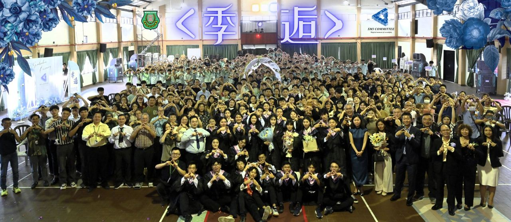
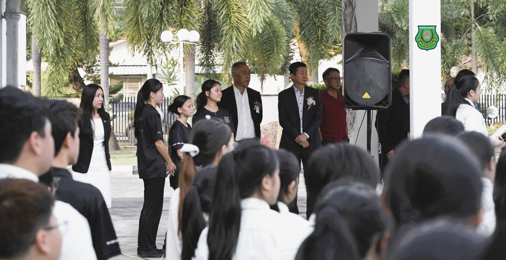
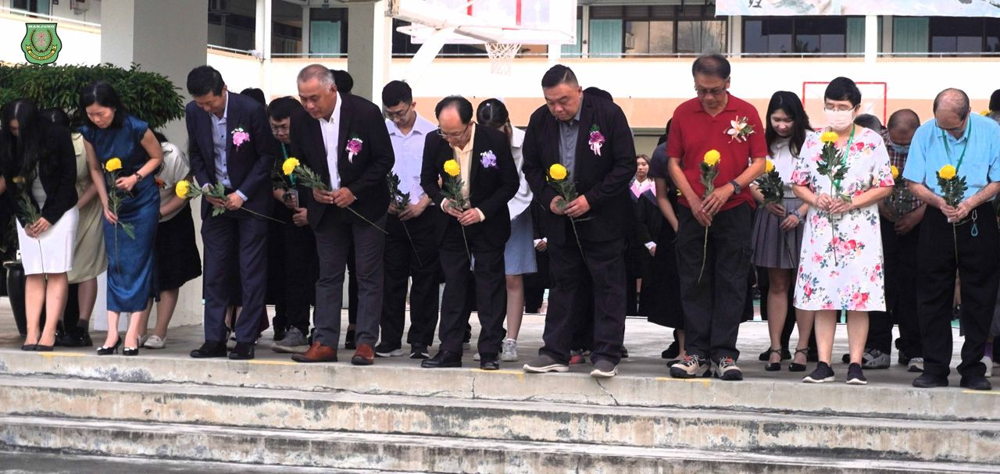
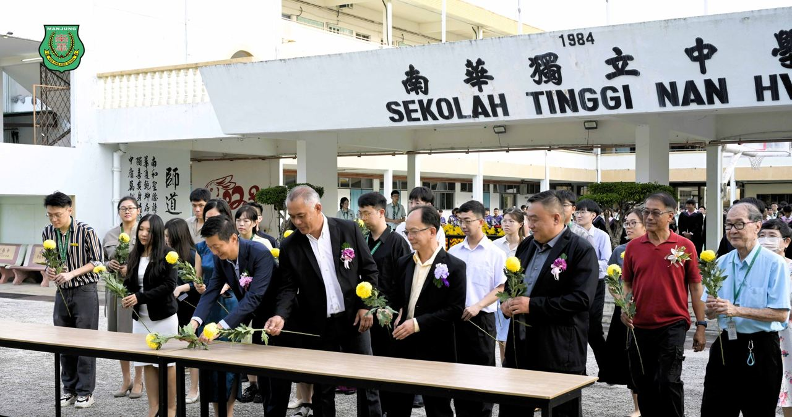
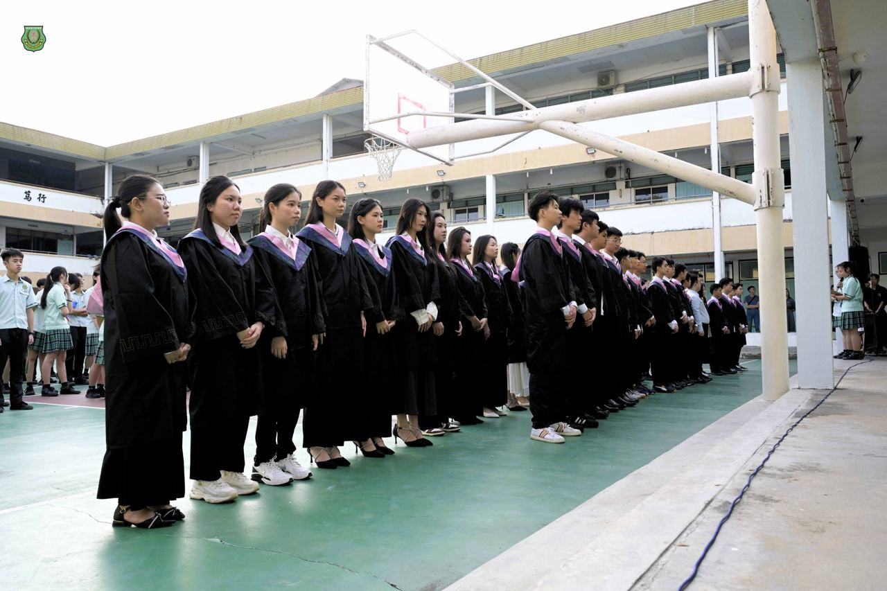
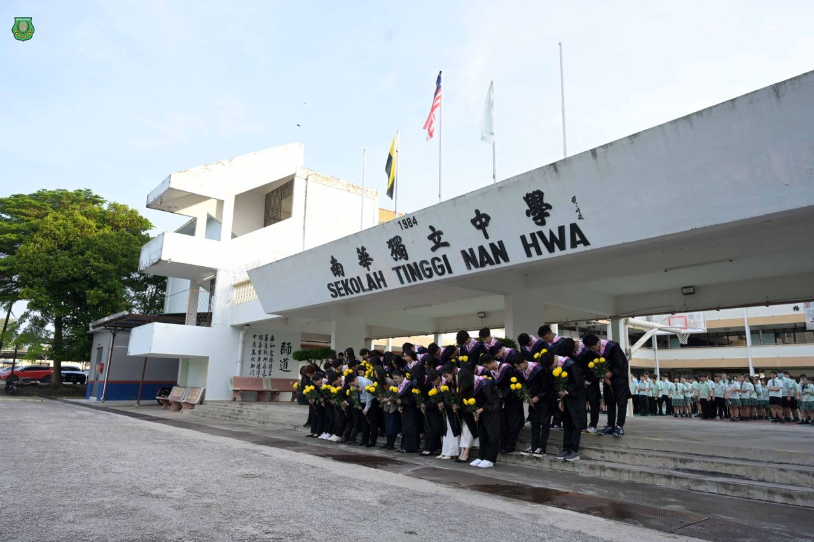
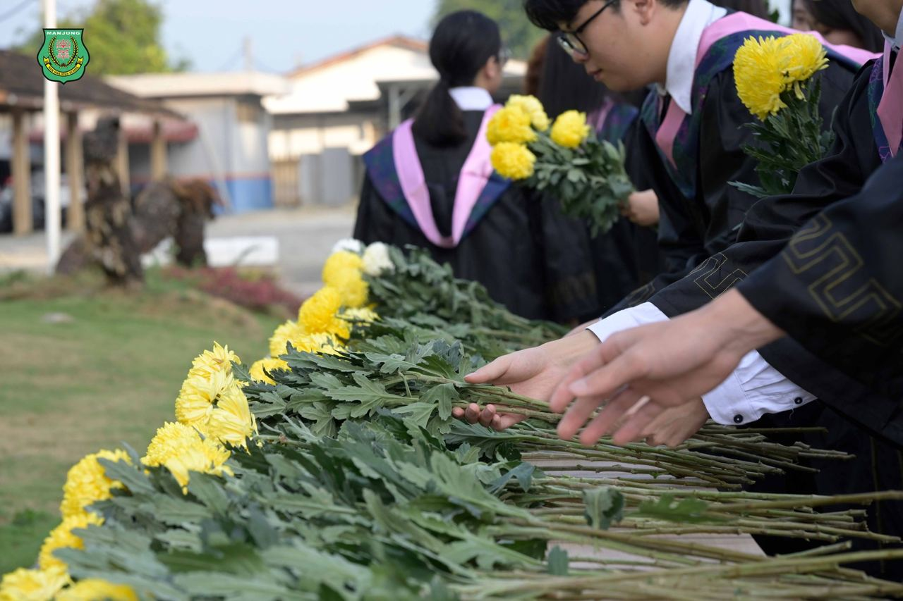
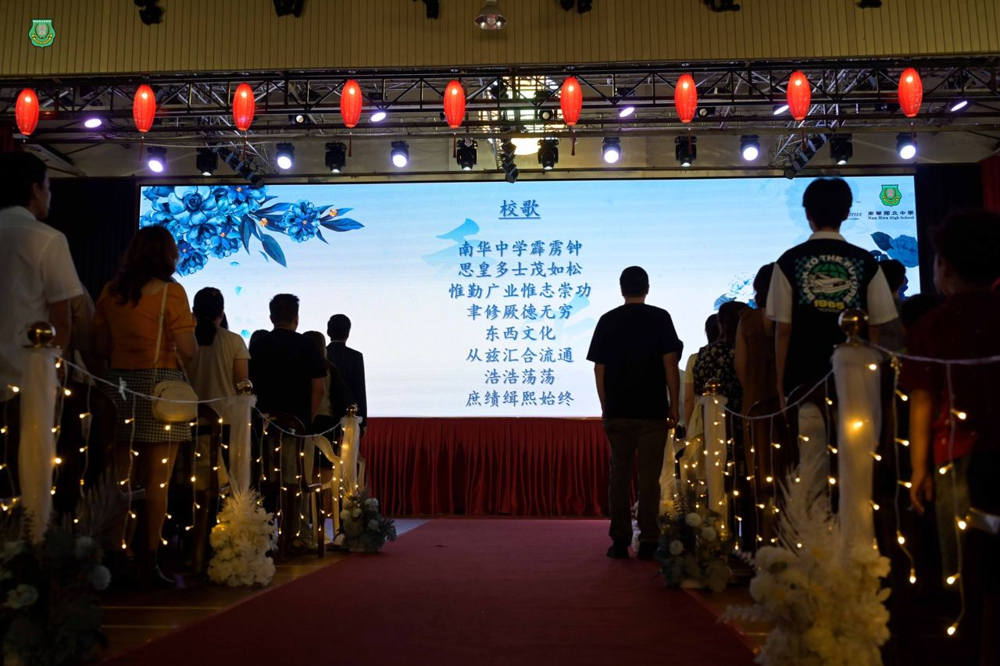

南华独中毕业礼化身“登机口”
南华独中毕业礼化身“登机口”
高中第51届暨初中第54届毕业典礼
以“#季逅”为题，象征告别与启程
不仅高三生家长，董事教师学生人人手持一张通往未来的“机票”即是手册，名为“青春”的候机大厅都是前来见证南华独中“#2025年高中第51届初中第54届毕业典礼”受邀嘉宾。本届典礼主题为 “季逅”，为了具象化“相遇与离别”的概念，高三筹委会别出心裁，将来宾的入场券设计成仿真机票，扫描“机票”背后二维码便能“登机”入座。一场场的致辞与表演仿佛都在为这次的离别轻轻挥手，却道出了深沉凝重的告别祝福。
#董事长颜登逸 在致辞时强调，在这个充满变数的时代，2025年的毕业生是特殊的一代，只因见证了全球性的动荡，却意味着练就了不凡强大去面对未来各种未知的挑战。颜登逸董事长提醒毕业生，虽然外在趋势不断改变，但真正引领一生方向的是“内心的灯”。这盏灯由“大格局、德与才”所铸造，并强调格局的大能看清更远的前进途径，德与才则能取信于人，立足社会。
#校长陈丽冰博士 则引用苏轼《临江仙·送钱穆父》中的名句“人生如逆旅，我亦是行人”，为毕业生上了一堂关于逆境的哲学课。陈丽冰校长直言，人生从来不会温顺，有时如静谧江面，有时如狂风骤雨，并告诫学生，真正的自由不在于顺境时的安逸，而在于风雨中仍能选择自己道路的勇气。
“六年前你们眼中有光但带着胆怯，六年后你们眼神坚定。未来的坎坷与困顿，都是生命的历练。要在风雨中聆听心跳，在孤独中寻找方向。”
#校友会主席林嵩胜 在致辞中精准地描绘了这一届“数字原住民”的画像——他们在网课的分屏里进入中学，又在AI生成的陪伴下完成学业，并提醒学弟妹切勿让效率挤占了好奇心而错失美好，因为“世界很大，网络很快，但一次真实的击掌、一个面对面的微笑，是任何科技都无法替代的真诚联结。”
#家长联谊会主席叶燕妮 则代表家长，道出了对学校的信任与感激，也将南华独中形容成孩子的“根”，给予了知识与品德的养分。叶燕妮主席勉励孩子在飞向属于自己的天空时，要把校园中学会的勤奋、坚毅与善良传递给社会。
典礼上，高三筹委会特别向母校赠送了一份精心设计的“#南华独中自1936年创校以来大事纪”，这不仅深刻体现了毕业生饮水思源的特质，更为明年即将来临的 #南华独中90周年校庆 敲响了序曲。仪式尾声，大银幕播放了由摄影组剪辑的校园生活MV，记录了六年来的笑泪时光。随着全体高三毕业生合唱《再见》与主题曲《季逅》，这也象征着第51届高中毕业生正式“启程”，带着师长的祝福与内心的灯火，乘坐名为“知恩”的班次长征更辽阔的远方。
出席毕业典礼者包括有南华独中副董事长高级拿督叶绍利、董事总务何添胜以及副总务林道祥董事。







